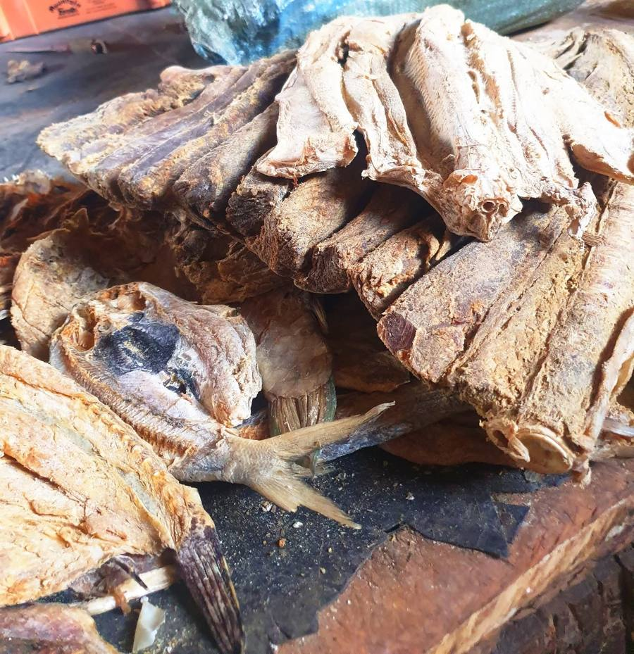
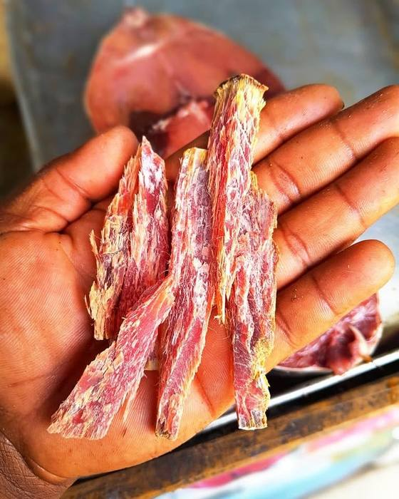

01
MOMBASAFISH MARKET
Fisheries
Seafood supply, market systems, and value chains. Most seafood travels a long, anonymous road — boat to broker to wholesaler to distributor to shelf. We cut that road down to almost nothing.
The morning shortcut. A boat lands at Shimoni before noon. We buy that same day, direct from the fisherman — no broker takes a cut, no cold room holds it for three days waiting for a bigger buyer. By afternoon it's cleaned, iced, and boxed. Somewhere in Nairobi or Malindi, a family eats fish that was swimming yesterday. That's the entire business model in one sentence.
— How every order works, Shimoni to your door
30+species catalogued
Same dayboat to packing table
0middlemen in the chain
Where we are today
- Daily direct purchase from Shimoni's small-boat fishermen
- Full catalogue — Swahili-first names, per-kg prices, cleaned to your preference
- WhatsApp ordering, M-Pesa payment: the way our customers already buy
Where we're going
- Standing supply agreements so fishermen know their catch is sold before they sail
- Species-by-season calendar so customers buy what the ocean is actually giving
- Wholesale tier for hotels and restaurants along the coast
See it live: the catalogue · Know Your Fish · From Boat to Box
03
MOMBASAFISH MARKET · ACADEMY
Innovation
Technology, preservation, renewable energy, and new ideas — built around how the coast actually works, not imported from a template that assumes everyone has a credit card.



The cart we didn't build. Every e-commerce guide says: build a checkout, take card payments, chase abandoned carts. But every single order this business has ever received came through WhatsApp, paid by M-Pesa. So we built the site around the conversation instead of against it — add to cart, and your cart becomes a message we've already written for you. Then we added something the big stores don't give you: a live tracker, so you can see exactly where your fish is without asking anyone.
— Why the site works the way it does
WhatsApp-first ordering
Liveorder tracking
<1spage load on mobile data
Where we are today
- Cart-to-WhatsApp checkout — no forms, no card, no friction
- Order tracker: every FishBox has a number and code, trackable to the doorstep
- Interactive Fish Guide — a quiz that matches customers to the right species
Where we're going
- Solar-powered cold storage at the landing site
- Improved drying systems — traditional method, modern hygiene and yield
- Catch-logging tools so fishermen record what they land, and get paid on data
See it live: the order tracker · the Fish Guide quiz
04
MOMBASAFISH ACADEMY · OCEAN
Blue Economy
Education, advocacy, consulting, and sustainable ocean solutions. Underneath the jargon it's a simple idea: use the ocean to build livelihoods without wrecking the ecosystem all of it depends on.
The report that came home. In mid-June, the FAO launched SOFIA 2026 — the world's most important fisheries report — not in Rome or Geneva, but in Mombasa, at the 11th Our Ocean Conference. Buried in its regional detail was a number that matters more to us than any global tonnage figure: small-scale fisheries across the Western Indian Ocean support more than 65 million people's food and income. That's not an abstraction here. That's Shimoni. That's the boats that fill your FishBox.
— SOFIA 2026, launched in Mombasa
65M+people supported, W. Indian Ocean
73%global stocks within sustainable limits
235M tworld production, 2024 record
Where we are today
- Plain-language reporting on SOFIA 2026 and what it means for this coast
- Explainers connecting sustainable fishing to the fish on a customer's plate
- A business model that proves low-impact sourcing can pay
Where we're going
- MombasaFish Academy: short courses in seafood handling, cold chain, and digital trade
- Advisory work for cooperatives building their own value chains
- Youth programs — bringing coastal school-leavers into the blue economy with skills, not slogans
Read: What is the Blue Economy? · SOFIA 2026 in Mombasa
06
MOMBASAFISH OCEAN
Marine Ecosystems
Reefs, mangroves, marine protected areas, and biodiversity conservation — plus the coastal tourism that lets people see why any of it is worth protecting. Every other pillar rests on this one.
A net that knows when to die. When a gillnet is lost at sea it keeps fishing — for months, catching turtles, sharks, anything that swims in. Kenyan researchers trialled a fix so simple it's almost funny: replace one synthetic cord on the headrope with biodegradable cotton twine. After a couple of months it breaks down, the net loses its shape and stops fishing on its own, and a marked buoy floats up so the gear can be recovered. In trials it caught just as much as an ordinary net. Nothing lost, everything gained — that's the standard we want every practice on this coast held to.
— From the SOFIA 2026 case studies, tested in Kenya
Small boatsonly — no trawlers
Mangrovesfunded through honey
Reef-safegear and methods
Where we are today
- Low-impact, small-boat sourcing — we don't buy from seabed-scraping trawlers
- Asali ya Mikoko: mangrove honey that pays beekeepers to keep mangrove forests standing
- Reporting on conservation innovation like the biodegradable net trials
Where we're going
- MombasaFish Ocean: coastal tourism — dhow trips, Shimoni visits, the coast at its source
- Partnership with local marine protected areas and beach management units
- Mangrove replanting tied to product sales — buy honey, plant a tree
Read: the ghost fishing story · mangrove honey
07
MOMBASAFISH MARKET · EXPORTS
Infrastructure
Cold chain, drying systems, solar solutions, and fisheries infrastructure. This is the unglamorous machinery that turns "fresh" from a hope into a promise you can keep.
72 hours of cold. The hardest part of selling fish in Kenya isn't catching it or selling it — it's the hours in between. An EPS foam cooler packed correctly with ice holds temperature for up to 72 hours, which is the difference between a customer in a far county getting ocean-fresh fish and getting a refund request. Three sizes cover everything from a single household to a hotel order. We charge them at cost, because the box isn't the business — the trust is.
— Why every FishBox ships in an insulated cooler
72 hrscold chain hold time
3 sizes5kg · 7kg · 15kg
At costbox & transport, no markup
Where we are today
- EPS insulated coolers holding temperature up to 72 hours in transit
- Same-day rider dispatch in Mombasa; express transport to 8 counties
- Pass-through pricing on boxes and transport — we don't profit on logistics
Where we're going
- Solar cold room at the landing site — power that doesn't depend on the grid
- Modern drying racks for Katashingo and Mwani: same tradition, better yield and hygiene
- Export-grade packing line as MombasaFish Exports comes online
See it live: cooler boxes · dispatch tracking
08
MOMBASAFISH EXPORTS
Trade & Exports
Taking the taste of the Swahili coast beyond Kenya — the same traceable, small-boat story, told to a bigger room.
Traceability is the passport. Export markets don't just want good fish — they want to know exactly where it came from, who caught it, and how it was handled. Most suppliers have to build that paper trail from scratch. We've been building it since day one, because it's how we already run: every order has a boat, a date, a coastline, and a cold chain record. The thing we do for honesty at home is the exact thing that opens the door abroad.
— Why "traceable to the source" is more than a slogan
Export-gradespecies in catalogue today
Traceableboat, date, coastline
Region firstthen international
Where we are today
- Export-grade species already handled daily: jumbo prawns, lobster, tuna, swordfish
- Dried products — Katashingo, Mwani — that travel without a cold chain
- Traceability records kept as standard practice, not as a compliance chore
Where we're going
- Regional trade into East African markets first — closest, fastest, most forgiving
- Certification and export licensing under the MombasaFish name
- Diaspora channel: the taste of home, shipped to Kenyans abroad
See: the premium catch · our traceability promise